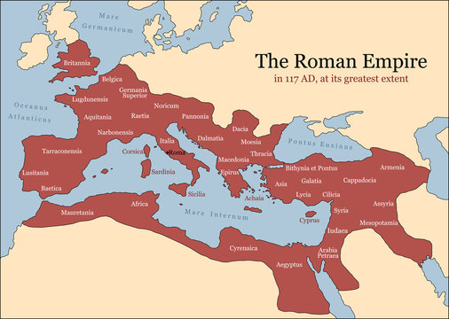

Introduction
The Roman Empire was one of the most influential and enduring civilizations in history. Spanning centuries and vast territories, it left an indelible mark on culture, governance, law, and architecture. The Roman Empire emerged from the Roman Republic, with its beginnings traditionally dated to 27 BC when Augustus became the first emperor. It encompassed vast regions of Europe, North Africa, and the Middle East, making it one of the largest empires in history.
History
The Roman Empire, an extraordinary entity that spanned from 27 BC to 476 AD, encapsulates a sweeping narrative of growth, governance, and influence. Beginning as a fledgling settlement on the banks of the Tiber River, Rome evolved into an expansive and powerful civilization that profoundly shaped the course of human history. Its meteoric rise saw the transformation from a monarchy to a republic, characterized by a complex system of governance, with elected officials, Senate deliberations, and the rule of law. The Roman Republic's military prowess and territorial acquisitions expanded its dominion across the Italian Peninsula, then far beyond, encompassing Europe, Northern Africa, and parts of the Middle East.
The transition from republic to empire marked a pivotal juncture. The rise of Augustus, who became the first Roman emperor in 27 BC, ushered in the Pax Romana—an era of relative peace, flourishing trade, and significant architectural development. Under his leadership, monumental structures like the Colosseum and the Pantheon were constructed, becoming enduring symbols of Rome's grandeur. Throughout this period, the empire's cultural influence extended through art, literature, language, and engineering. The Roman legal system's principles, including the concept of "innocent until proven guilty," laid the foundation for modern jurisprudence.

However, the Roman Empire was not immune to internal conflicts, political intrigue, and economic challenges. The third century saw periods of crisis and military anarchy, exemplified by the frequent changes in leadership. Despite these tribulations, the empire endured for centuries, undergoing significant territorial shifts with the division into Western and Eastern Roman Empires. The Western Roman Empire faced mounting pressure from barbarian invasions and internal disarray, eventually culminating in its collapse in 476 AD.
Concurrently, the Eastern Roman Empire—often referred to as the Byzantine Empire—carried on the legacy of Rome in Constantinople (modern-day Istanbul). This enduring empire preserved and adapted Roman traditions while forging its own unique identity, encompassing art, religion, and governance.
The legacy of the Roman Empire is manifold and far-reaching. Its contributions to architecture, engineering, governance, language, and cultural diffusion continue to resonate across the centuries. The foundational aspects of Western civilization, such as legal principles, government structure, and architectural innovation, can trace their origins back to the Roman Empire's enduring influence.
Culture
Roman culture, an intricate mosaic woven over the span of centuries, offers a captivating glimpse into the vibrant tapestry of art, architecture, literature, philosophy, and societal norms that defined one of history's most influential civilizations.
Roman architectural prowess is immortalized in the grandeur of structures like the Colosseum, a marvel of amphitheater engineering, and the Pantheon, an awe-inspiring temple with a colossal dome. Their engineering feats, exemplified by intricate aqueducts and enduring roads, shaped the landscape and infrastructure of the empire.
Roman literary achievements encompass epic works like Virgil's "Aeneid," historical chronicles such as Livy's "History of Rome," and Cicero's eloquent philosophical treatises. Latin, the linguistic foundation of Roman culture, not only facilitated communication but also birthed languages that endure in modern times.

Roman art embraced realism and portraiture, evident in sculptures that captured intricate details and emotions with stunning precision. From the monumental Augustus of Prima Porta to intricate relief carvings, Roman sculpture bridged the gap between idealism and realism.
Roman philosophy, drawing from Greek predecessors, found expression in Stoicism's emphasis on virtuous living and Epictetus' teachings on self-mastery. The intellectual elite engaged in debates and discourse, fostering an environment of critical thinking and the pursuit of knowledge.
Roman society was stratified into classes—patricians enjoyed privilege as wealthy landowners, while plebeians formed the common population. The family unit, headed by the paterfamilias, was a cornerstone, preserving traditions, and values.
Roman religious beliefs encompassed a pantheon of gods and goddesses, with rituals, festivals, and sacrifices honoring diverse aspects of life. Mythological tales, rich with symbolism, intertwined with the cultural fabric, influencing art, literature, and societal norms.
The grandeur of the Colosseum echoed with the cheers of spectators during gladiatorial contests and chariot races, reflecting a fascination with entertainment. Public baths, theaters, and circuses provided leisurely respites, fostering communal connections and shared experiences.

The Twelve Tables codified Roman law, a foundation for justice that offered concepts like "innocent until proven guilty" and influenced legal systems globally. The Senate, an esteemed body of statesmen, played a pivotal role in governance, advising rulers and shaping legislation.
The comprehensive Roman road network, an engineering marvel, facilitated trade, communication, and the dissemination of ideas throughout the vast empire. Latin, the unifying language of administration and literature, carried forward Roman culture and knowledge across borders.
The legacy of Roman culture resonates through the ages, with its enduring impact on art, language, philosophy, governance, and societal norms. Even as the empire's political dominance waned, its cultural achievements continued to shape the foundation of Western civilization, a testament to the indomitable spirit of creativity and innovation that defined the Roman world.